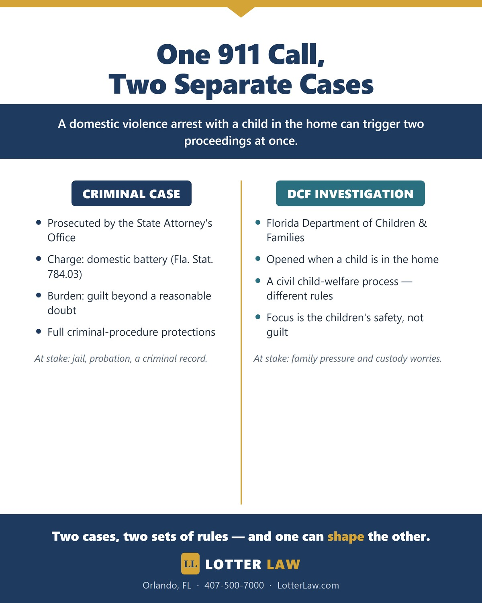

Domestic Violence Charge Dropped: The DCF Pressure Problem
A domestic violence case can take on a life of its own — driven less by what actually happened than by who else gets pulled in. In a recent matter, the alleged incident was minor, but a DCF child-welfare investigation loomed over it and shaped how it unfolded. After we made the State aware of that dynamic — and the prosecutor took an independent look at everything in the file — the State ultimately dropped the charge on its own through a nolle prosequi.
The criminal charge was domestic violence battery under Florida Statute 784.03. "Nolle prosequi" is the formal term for the State deciding not to prosecute — the case is dropped. On the criminal side, it is the best outcome you can ask for.
A Minor Incident, a Major Response
The physical contact alleged here was about as minor as a battery gets: during an argument, a phone was knocked out of the other person's hand. No injuries. But someone called 911 — and once law enforcement responded to a home with a child present, the situation grew well beyond the incident itself. Because there was a child in the house, the Department of Children and Families (DCF) opened a child-welfare investigation.
That is important context. A minor battery allegation and a DCF investigation are two very different things, but they became tangled together — and the DCF side started shaping how the criminal case played out.

When “Cooperation” Isn’t About the Case
On paper, the complaining witness was cooperating with the prosecution. That usually makes a domestic violence case stronger. But here, her cooperation had little to do with what happened that night.
With the DCF investigation hanging over her, the witness believed that if she did not cooperate with the prosecution, DCF might take adverse action involving her children — up to taking her kids. Whether DCF actually would have done that is beside the point. What mattered was what she believed would happen. She was not pressing the case because she thought a crime needed to be prosecuted — she was doing what she felt she had to do to protect her children. Her cooperation was real, but the reason behind it had nothing to do with the strength of the allegation.
How the Case Was Dropped
Once we understood why the witness was really cooperating, we made sure the State Attorney's Office was aware of it. We don't claim that one conversation decided the case — realistically, it put the issue in the back of the prosecutor's mind. The State then conducted its own investigation, re-interviewed the witness, and, weighing that along with everything else in the file, ultimately elected to drop the charge on its own through a nolle prosequi.
We don't take credit for the State's decision — that call was theirs to make. What we can say is that the dynamics behind a case matter, and making sure the people with the power to dismiss it have the full picture is part of doing the job right.
Why This Matters in Domestic Violence Cases
Domestic violence cases are uniquely tangled with collateral pressures — DCF, housing, family relationships, immigration, and more. Those pressures can keep a weak case moving long after the underlying incident would justify it. A few things this case illustrates:
- A cooperating witness is not the whole story. Why someone is cooperating can matter as much as the fact that they are.
- DCF changes the dynamics. A child-welfare investigation can put pressure on a family that has nothing to do with guilt or innocence.
- Prosecutors weigh the whole file. Given the full picture, the State can re-evaluate and, on its own, decide a case should not go forward.
- The minor facts still matter. What was actually alleged — here, a phone knocked from a hand — belongs at the center of the conversation.
How a Domestic Violence Attorney Can Help
If you are facing a domestic violence arrest — especially with DCF involved — the most valuable thing a defense attorney can do is understand the entire situation, not just the police report. Knowing what is really driving a case, and making sure the prosecutor has that context, is part of giving a case its best chance — even though no one can promise how the State will exercise its discretion.
Every case is different. This result does not guarantee the same outcome in your case. No two cases are alike, and prior results do not predict future outcomes. What this case shows is why the full context behind a domestic violence charge deserves serious attention from the start.
Facing a Domestic Violence Charge in Central Florida?
If there's a DCF investigation or family pressure tangled up with your case, the full story matters. Get advice from a defense team that looks past the police report before you make any decisions. Call for a free consultation.
Legal References
Related Articles

Jeff Lotter
Criminal Defense Attorney | Former State Trooper
Jeff Lotter is an Orlando criminal defense attorney and former Florida Highway Patrol trooper. He uses his law enforcement background to build stronger defenses for clients facing domestic violence and criminal charges.